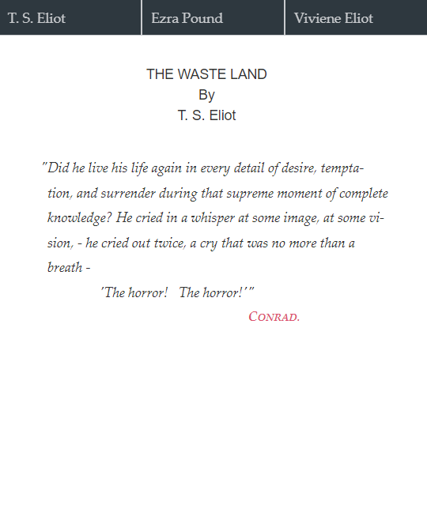
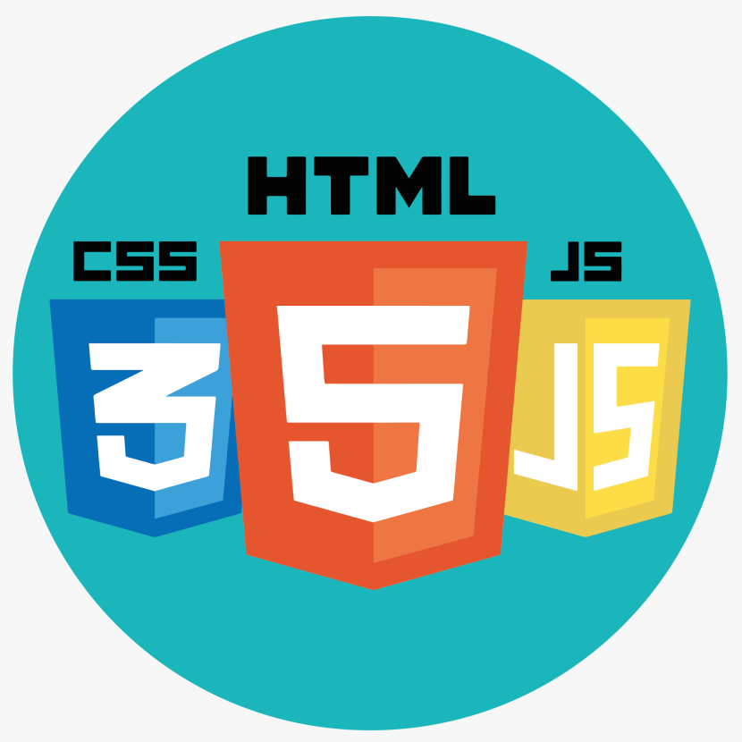

The Waste Land
Original Drafts:
a scholarly edition
Discover the work by Thomas Stearns Eliot and the origins of a masterpiece! Find out the history of the poem and examine it with digital tools!
The poem
The Waste Land is a poem by Thomas Stearn Eliot, one of the major poems of the 20th century and a masterpiece of modernist poetry. The work's first publication dates back to 1922: it first appeared in the United Kingdom in the October issue of Eliot's The Criterion. In December 1922, the poem was published in book form.
The Waste Land is a poem about brokness and loss, as a portrait of the post-war generation. Disillusionment and fragmentation are both the basic themes and a key feature of the poem's style and layout.
The project
The WWWaste Land SDE: The Waste Land Original Drafts is a Digital Text in the Humanities project. The present editions aims to provide an effective representation of the first stages of the poem's creation, analysing the original manuscript-typescript by T. S. Eliot. The edition offers several visualizations of the source document, including a written reproduction of the annotations by T. S. Eliot, Ezra Pound, and Vivienne Eliot, and a text updated according to those revisions.
 The sources
The present edition recovers the precious content of The Waste Land Original Drafts, a manuscript-typescript today preserved at the New York Public Library. The document contains the original typescript draft of the poem along with many hand-written corrections by the author, Ezra Pound, and the author's wife, Vivienne Eliot: in other words, it represents a perfect reflection of the fragmentary essence of the poem.

Technologies

"And I will show you something different from either
Your shadow at morning striding behind you
Or your shadow at evening rising to meet you
I will show you fear in a handful of dust"